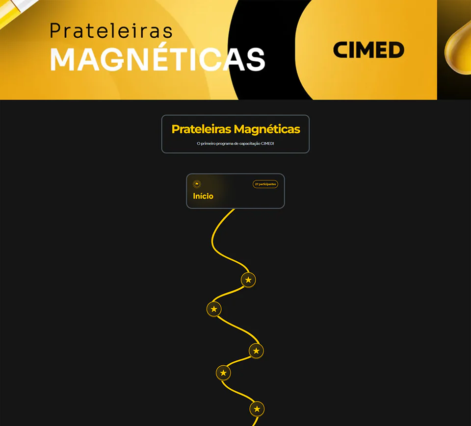
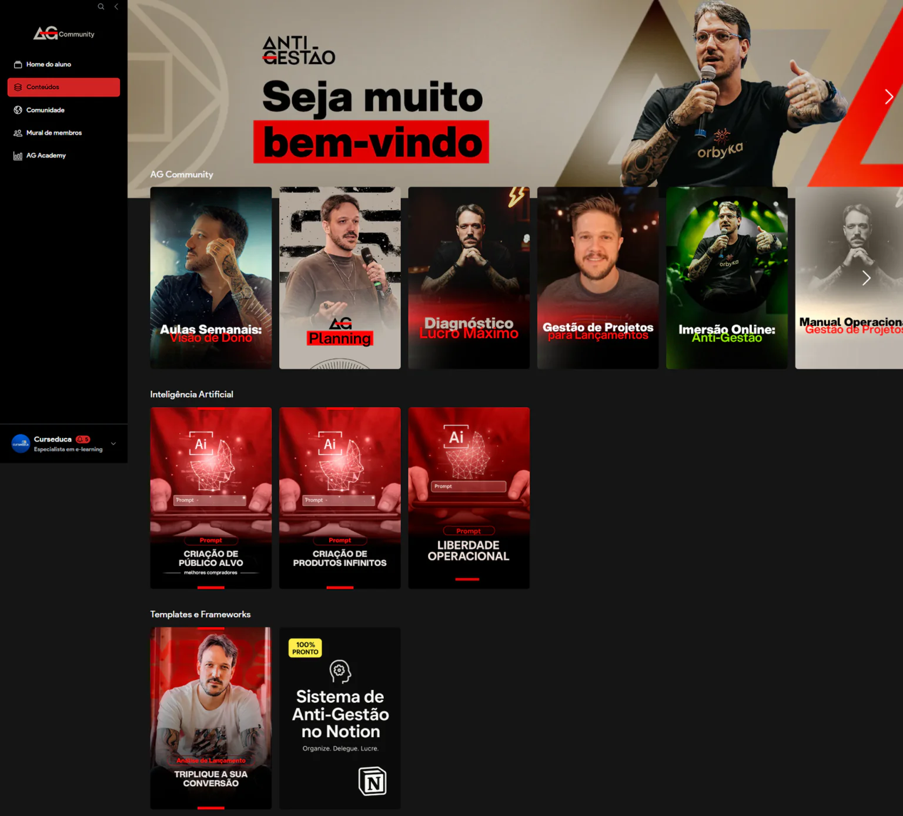
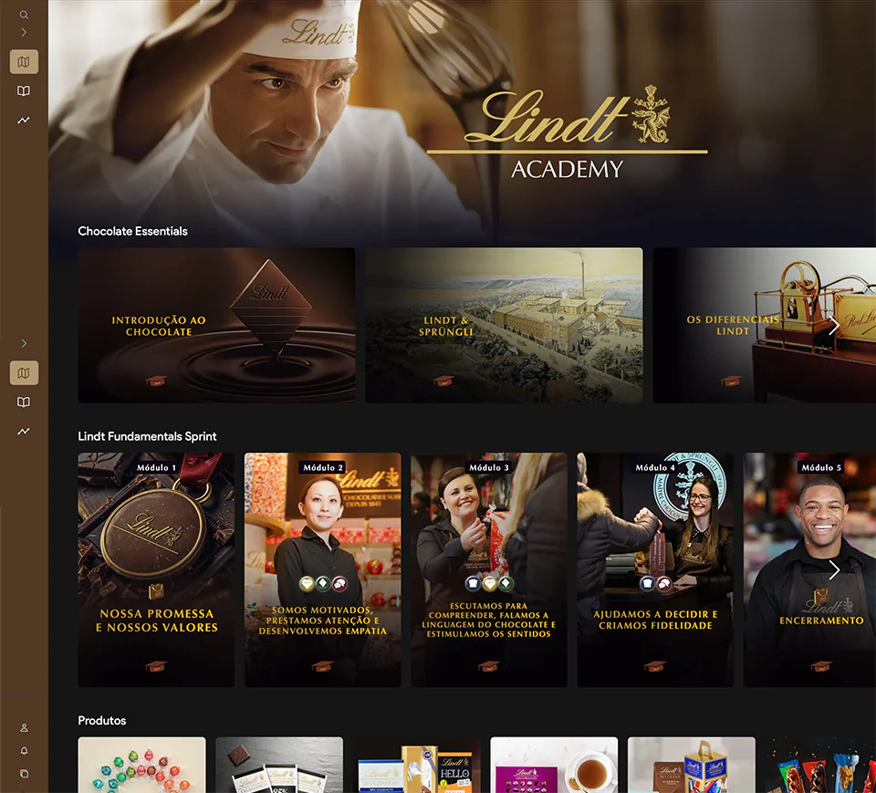
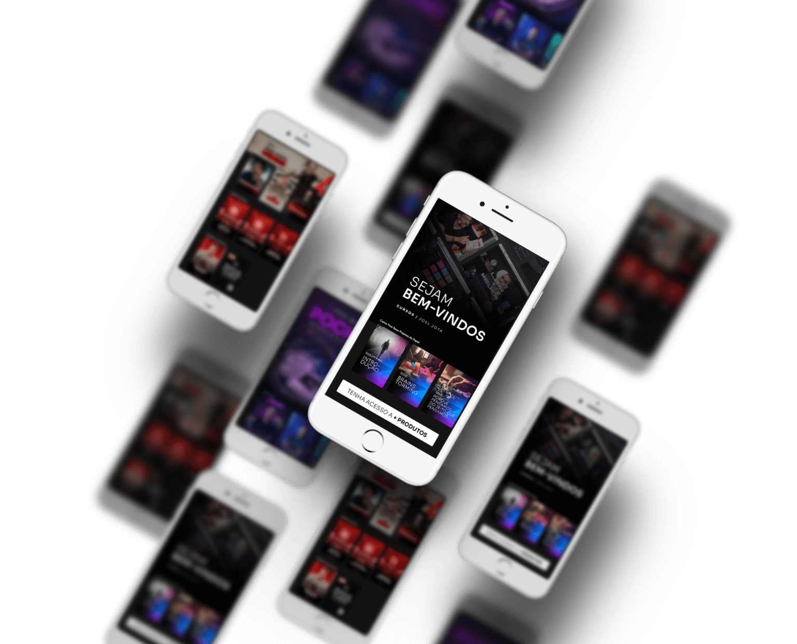
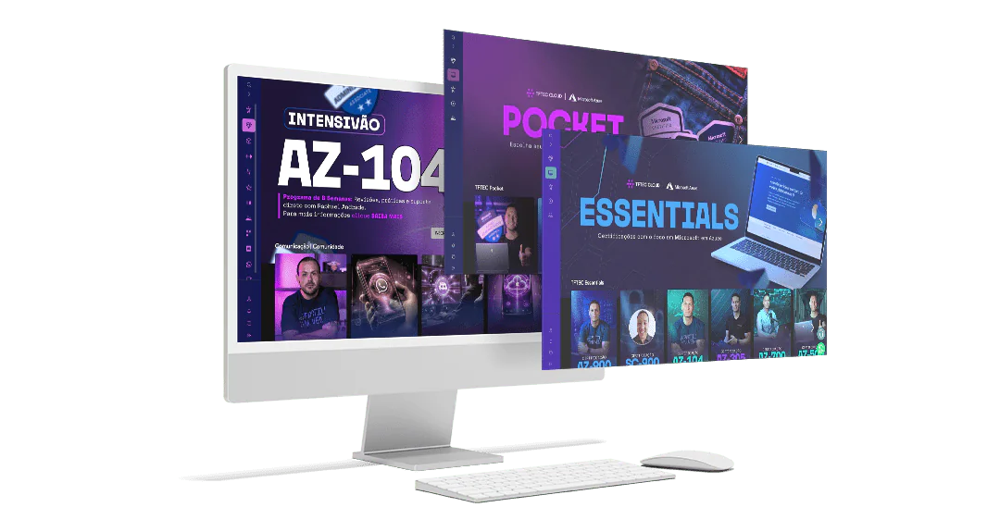
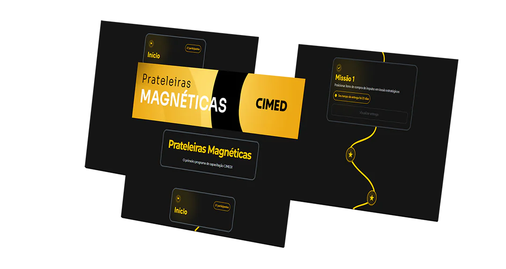
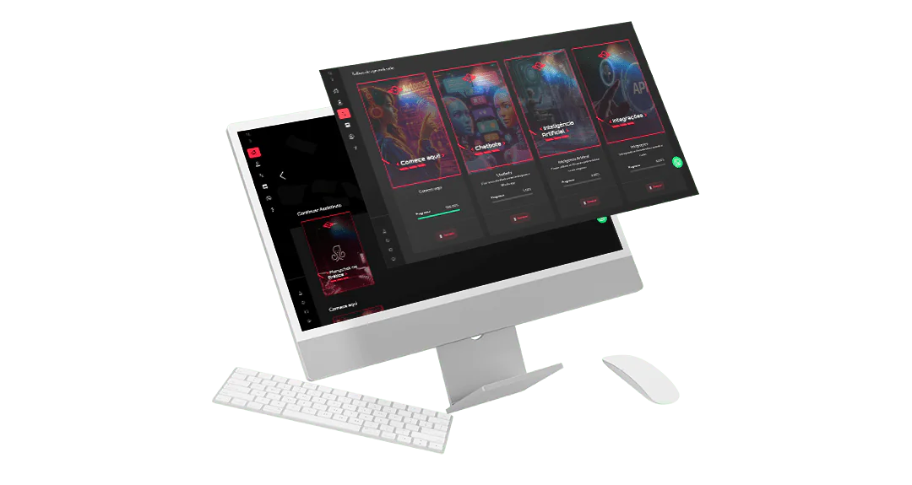
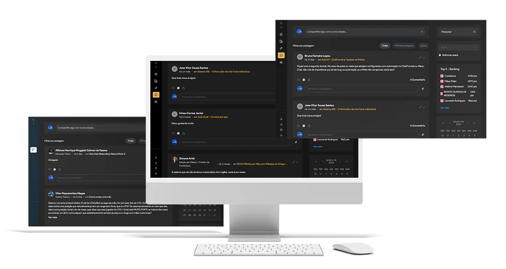
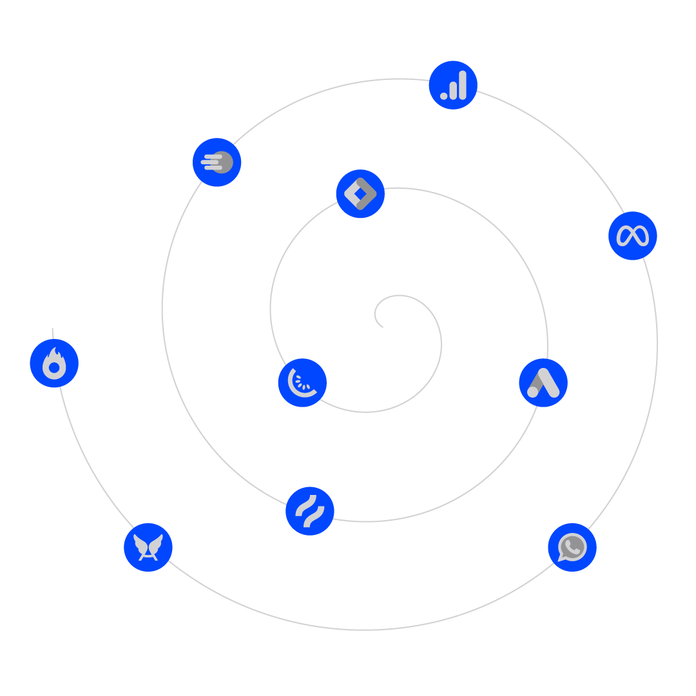

Aulas
Ofereça conteúdos exclusivos e valorize a experiência do usuário.
Relatórios semanais usados pelos maiores players do mercado.
Receba relatórios semanais exclusivos, identifique pontos de virada e tome decisões com mais confiança, posicionando você à frente do mercado.
Quero meus relatórios semanaisOfereça conteúdos exclusivos e valorize a experiência do usuário.
Crie um espaço para interação e fidelização do cliente.
Monetize com produtos e serviços adicionais.

CIMED
Marcelo Pinazza
LindtDisponível para Android e iOS.

Seus clientes vão amar ter todas as aulas, encontros ao vivo, calendários de aulas e muito mais na palma da mão, usando o seu app.
Garanta a melhor experiência para os seus alunos com uma área de membros premium, intuitiva e encantadora e personalizada do seu jeito.

Motive seus alunos com recompensas, medalhas, pontuação, ranking e liberando conteúdos extras.

Guie seus alunos através dos conteúdos e construa funis de vendas direcionando seus alunos para otimizar o aprendizado e adquirir novos produtos.

Ofereça aos seus membros a oportunidade de fazer publicações, interagir entre si e criar networking.

Nossos recursos de construção de página permitem a personalização total da sua plataforma.
Contamos com mais de 30 opções de integrações para a sua plataforma.

Quero meus relatórios semanaisConfira as nossas respostas mais frequentes.
Se sua dúvida ainda não for respondida, entre em contato com nossa equipe clicando aqui.
Não será cobrado nenhuma taxa extra independente do plano escolhido.
Sim, você consegue realizar o downgrade e upgrade de plano dentro da própria plataforma de forma simples e rápida.
Sim, nossa plataforma permite explorar os diversos tipos de produtos digitais, como e-books, vídeo-aulas, webinários, áudios ou podcasts, incorporar sites externos, quiz, galeria e muito mais!
Não, após contratar a plataforma você tem total liberdade para começar a vender antes mesmo do seu curso estar 100% gravado.
Sim, a Teoria dos Ciclos é customizável, ou seja, você poderá alterar cores, banners, menus, além da organização dos seus relatórios e da vitrine que mostrará para os assinantes.
Sim, você pode disponibilizar qualquer tipo de produto digital de forma gratuita dentro da sua plataforma.
Sim, o processo de migração tem variação de acordo com o plano escolhido, ele pode ser realizado através de uma planilha de importação em lote onde você conseguirá importar um volume grande de alunos dentro da sua área de membros.
Não, aqui na Teoria dos Ciclos você não precisa limitar ou pagar nada a mais por quantidade de assinantes, independente do plano que tenha contratado.
Sim, nosso suporte é realizado dentro da plataforma, via WhatsApp ou e-mail. Nosso atendimento acontece de segunda a sexta no horário comercial.
Além disso, após a venda você terá acompanhamento via WhatsApp com um gerente de contas para te auxiliar nos primeiros passos dentro da plataforma e após esse período terá acompanhamento com nosso time de suporte.
Temos nossa própria hospedagem de vídeo (contratação apartada dos planos da área de membros), o Player Teoria dos Ciclos, você poderá fazer o upload direto dos seus vídeos na sua área de membros.